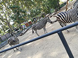

Aire Pur
Parc zoològic de Barcelona

Dins del parc de la ciutadella trobem el zoològic de Barcelona obert fa 125 anys i una perfecta pausa per tot el món. És una finestra a la natura, una eina d'aprenentatge, un centre dedicat a l'educació i sobretot a la conservació de la fauna que et permet gaudir d'una opció única de cultura científica i d'esbarjo al cor de Barcelona
